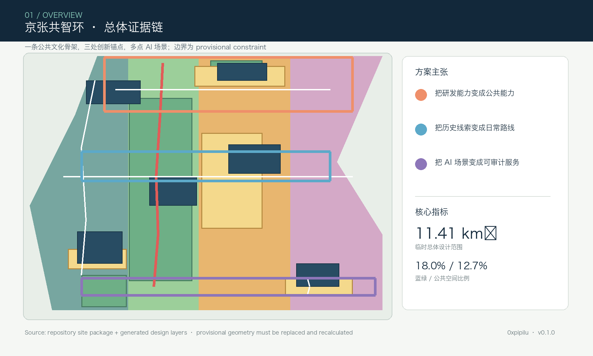
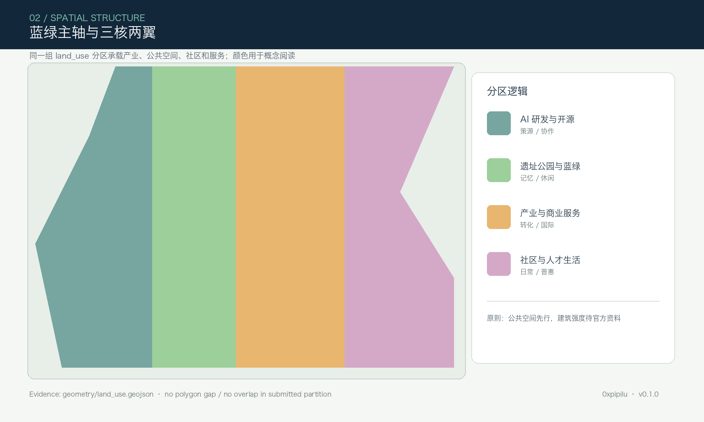
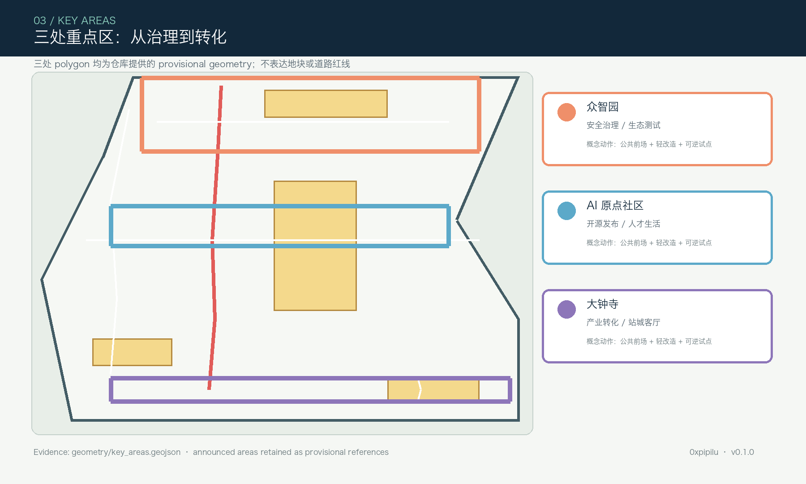
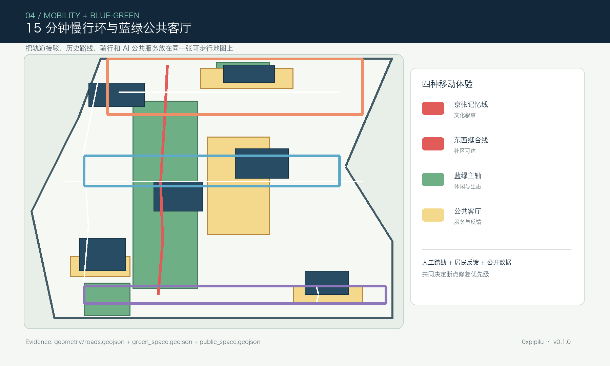
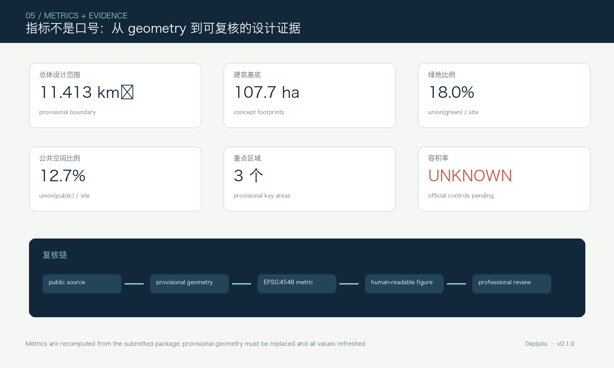

总览地图
从同一组 GeoJSON、metrics、矩阵和自检状态生成的总体阅读图。

三层范围
统筹研究、总体设计和重点区域的递进关系。

重点区域
众智园、北京 AI 原点社区、大钟寺三处重点区的概念定位和空间动作。

用地分区、交通慢行、蓝绿公共空间
以蓝绿主轴、公共客厅和轨道接驳把创新带纳入日常城市体验。

建筑、更新项目与 AI 场景
建筑基底只表达概念对象；更新优先保留和轻改造，AI 场景设置人工复核、数据最小化和公众退出机制。
核心指标
页面中的数字必须与 metrics.json 一致；容积率因官方控制条件缺失保持 unknown。

任务覆盖
compliance_matrix.json 覆盖公告任务 1.3、1.4、1.5 与 agent.1—agent.6；standard_matrix.json 与 design_depth_matrix.json 提供专业证据映射。
| 任务层 | 空间证据 | 人类可读响应 |
|---|---|---|
| 一带总体概念 | site boundary / land use / phasing | 京张共智环、一带三核两翼、多点场景 |
| 三处重点区 | key_areas / buildings / public space | 治理、原点、产业转化三个创新接口 |
| 长期运营 | roads / green / public space | 活动周、开发者社区、场景开放和反馈机制 |
自检状态
正式提交前运行 deterministic validation、spatial review、visual review、professional review 和 participant preflight。
来源
来源等级、许可和用途边界记录在 sources.json；专业标准快照来自仓库本地 reference。
OFFICIAL-ANNOUNCEMENT · AGENT-TASKBOOK · SITE-PACKAGE · SOURCE-REGISTRY · BOUNDARY-SOURCE · KEY-AREA-SOURCE
假设
官方红线、控规、权属、建筑现状、市政、交通、文保、消防、能源和数据治理条件均需专业团队继续核对。
所有空间建议是概念建议、参考方案或可供专业团队深化研究，不构成政府审定结论、工程可行性结论、投资承诺或实施保证。